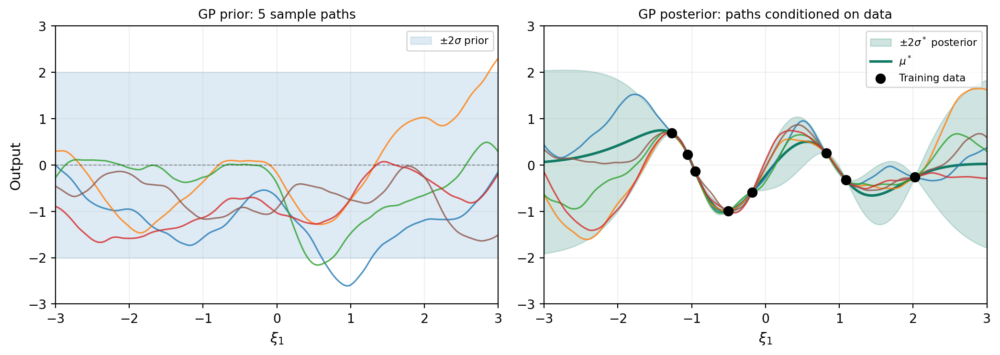
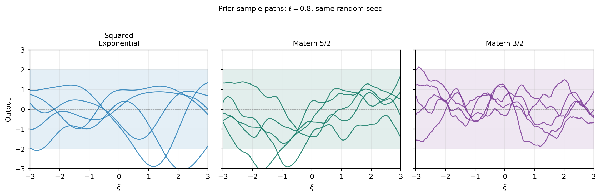
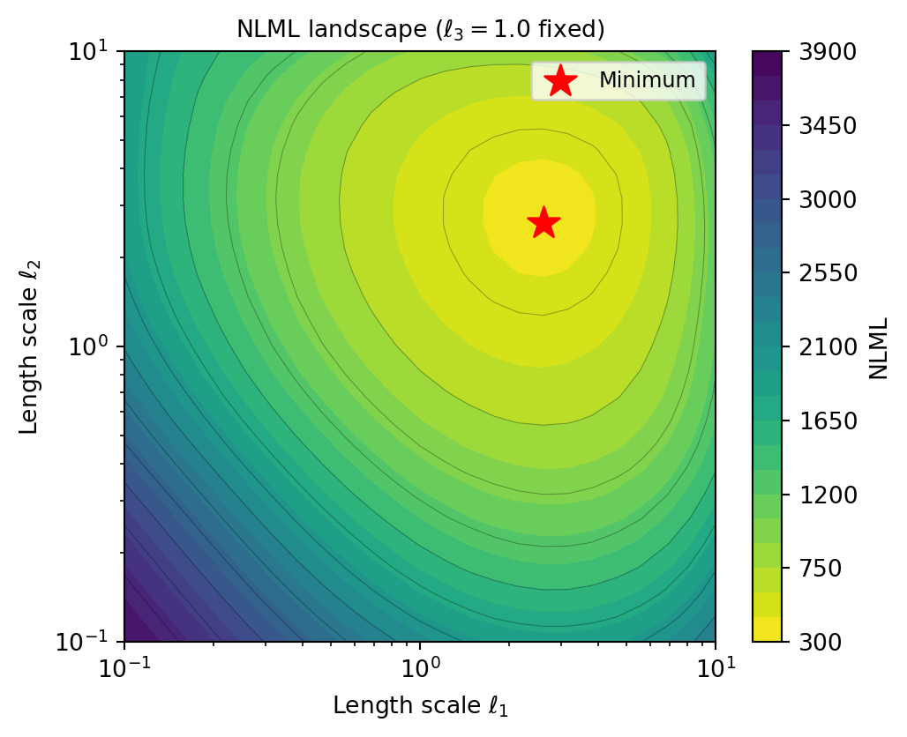
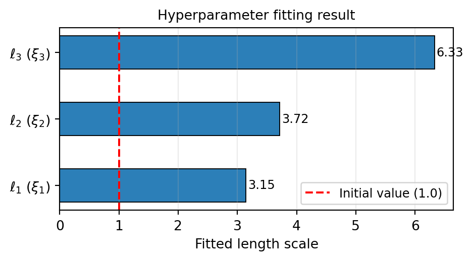
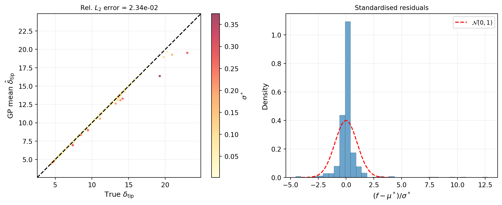
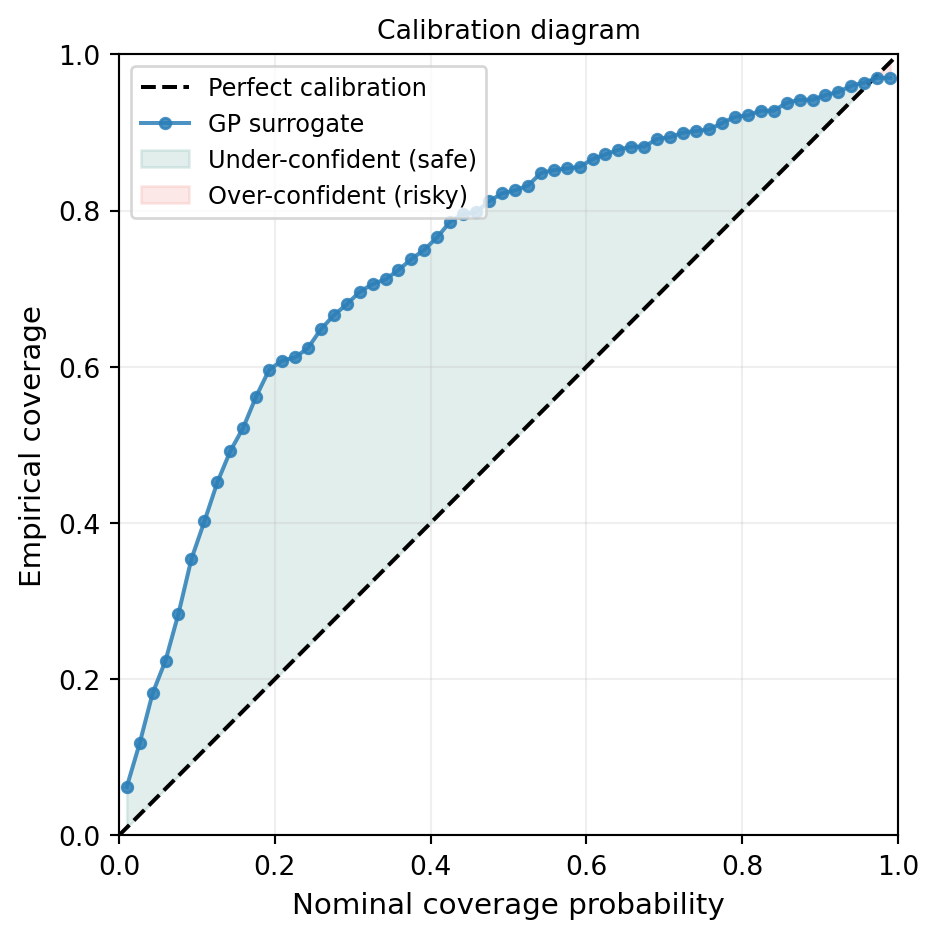
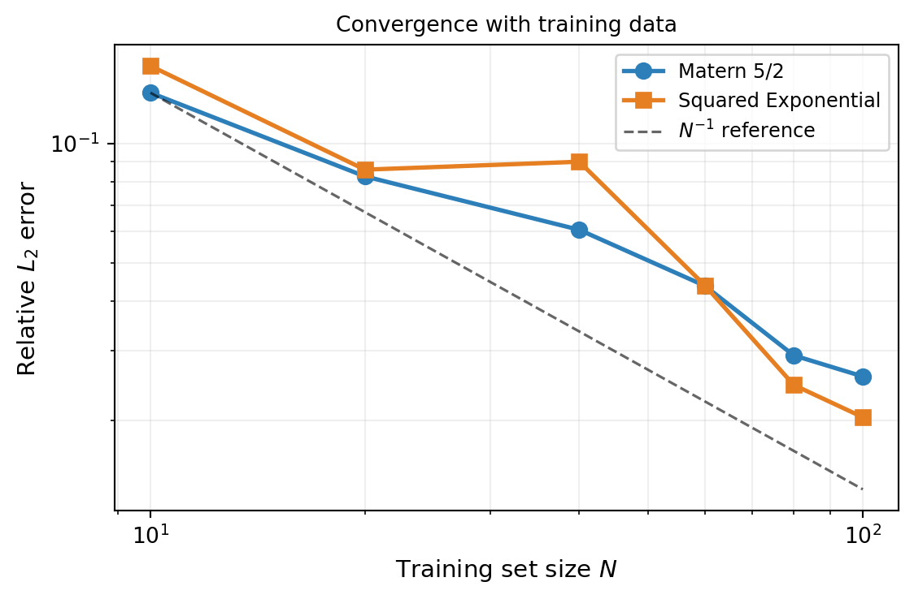
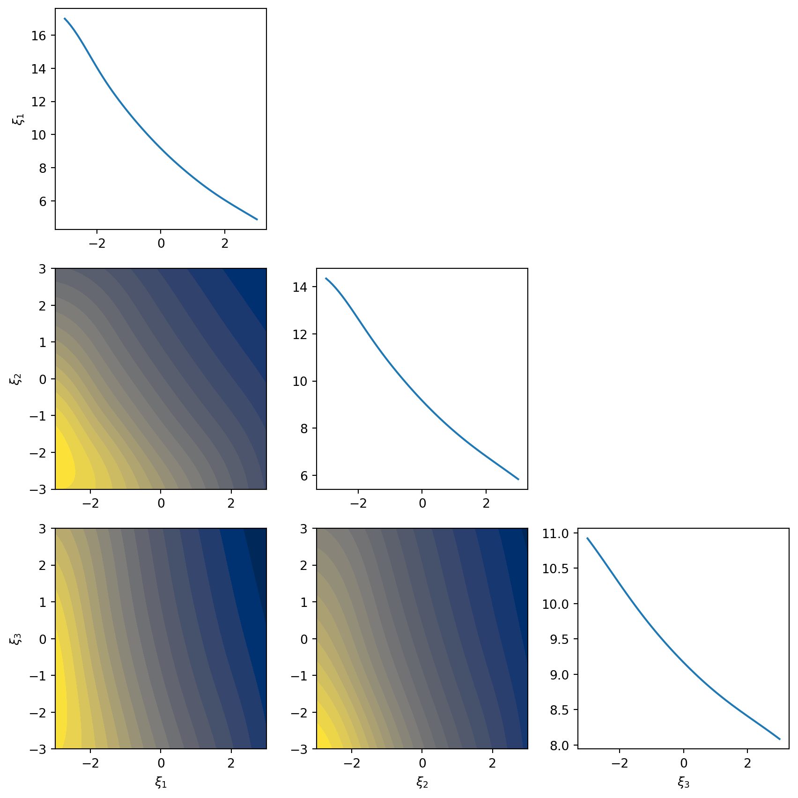
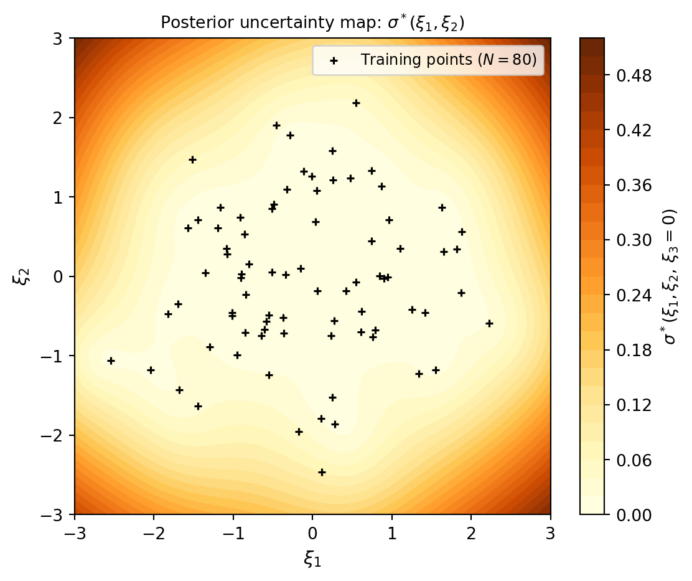

import numpy as np
import matplotlib.pyplot as plt
from pyapprox.util.backends.numpy import NumpyBkd
from pyapprox.benchmarks.instances.pde.cantilever_beam import (
cantilever_beam_1d,
)
bkd = NumpyBkd()
benchmark = cantilever_beam_1d(bkd, num_kle_terms=3)
model = benchmark.function()
prior = benchmark.prior()
marginals = prior.marginals()
nvars = model.nvars()
nqoi = model.nqoi()Building a Gaussian Process Surrogate
PyApprox Tutorial Library
Approximate an expensive model with a Gaussian process and quantify prediction uncertainty.
TipDownload Notebook
Learning Objectives
After completing this tutorial, you will be able to:
- Explain what a Gaussian process prior is and how it encodes smoothness assumptions via the kernel
- Select a kernel appropriate for the input dimension and distribution
- Fit a GP to training data using maximum marginal likelihood hyperparameter optimisation
- Predict the posterior mean and uncertainty at new input locations
- Assess surrogate accuracy and calibration on an independent test set
- Visualise how the GP posterior uncertainty reflects data coverage
Surrogate models replace expensive simulators with cheap approximations — see The Surrogate Modeling Workflow for an introduction. A Gaussian process (GP) surrogate goes one step further than a polynomial: it returns not just a prediction but a full probability distribution. The posterior mean \(\mu^*(\mathbf{x})\) is the best estimate, and the posterior standard deviation \(\sigma^*(\mathbf{x})\) tells us how confident the surrogate is at that location. This built-in uncertainty quantification is the defining advantage of GP surrogates.
Setup: The Beam Benchmark
We use a 1D Euler–Bernoulli cantilever beam with a spatially varying bending stiffness \(EI(x)\) modelled as a log-normal random field parameterised by three KLE coefficients \(\xi_1, \xi_2, \xi_3 \sim \mathcal{N}(0, 1)\). The model returns the tip deflection as the QoI.
The Gaussian Process Prior
A GP places a probability distribution over functions. We write:
\[ f(\boldsymbol{\xi}) \sim \mathcal{GP}\!\left(m(\boldsymbol{\xi}),\, k(\boldsymbol{\xi}, \boldsymbol{\xi}')\right) \]
where \(m(\boldsymbol{\xi}) = \mathbb{E}[f(\boldsymbol{\xi})]\) is the mean function (usually taken to be zero or a simple polynomial) and \(k(\boldsymbol{\xi}, \boldsymbol{\xi}')\) is the kernel (or covariance function), which controls the smoothness and scale of functions drawn from the prior.
The key property of the GP is that any finite collection of function values \(\mathbf{f} = [f(\boldsymbol{\xi}^{(1)}), \ldots, f(\boldsymbol{\xi}^{(N)})]^\top\) follows a multivariate Gaussian distribution:
\[ \mathbf{f} \sim \mathcal{N}\!\left(\mathbf{m}, \mathbf{K}\right), \qquad K_{ij} = k(\boldsymbol{\xi}^{(i)}, \boldsymbol{\xi}^{(j)}) \]
This Gaussian structure is what makes posterior inference exact.
Prior and Posterior Sample Paths
The best way to build intuition for a GP is to draw samples from it. A prior sample is a plausible function before we see any data; a posterior sample is a plausible function after conditioning on the training observations.
from pyapprox.surrogates.gaussianprocess import ExactGaussianProcess
from pyapprox.surrogates.kernels.matern import Matern52Kernel
from pyapprox.tutorial_figures._gp import plot_prior_posterior_samples
bkd_preview = NumpyBkd()
_k = Matern52Kernel([0.8], (0.1, 10.0), 1, bkd_preview)
_gp_prior = ExactGaussianProcess(_k, nvars=1, bkd=bkd_preview, nugget=1e-8)
# 1D grid for plotting
xi_grid = np.linspace(-3, 3, 200)
X_grid = xi_grid.reshape(1, -1)
# ---- Prior samples ----
K_prior = bkd_preview.to_numpy(_k(X_grid, X_grid))
K_prior += 1e-8 * np.eye(len(xi_grid))
L_prior = np.linalg.cholesky(K_prior)
rng = np.random.default_rng(7)
n_samples = 5
Z = rng.standard_normal((len(xi_grid), n_samples))
prior_paths = L_prior @ Z
prior_std = np.sqrt(np.diag(K_prior))
# ---- Condition on 8 pseudo-observations of sin(pi*xi) ----
np.random.seed(11)
X_obs = np.sort(rng.uniform(-2.5, 2.5, 8)).reshape(1, -1)
y_obs = (np.sin(np.pi * X_obs) + 0.15 * rng.standard_normal(X_obs.shape))
y_obs_arr = bkd_preview.asarray(y_obs)
X_obs_arr = bkd_preview.asarray(X_obs)
_gp_prior.hyp_list().set_all_inactive()
_gp_prior.fit(X_obs_arr, y_obs_arr)
mu_post = bkd_preview.to_numpy(_gp_prior.predict(X_grid))[0, :]
std_post = bkd_preview.to_numpy(_gp_prior.predict_std(X_grid))[0, :]
# Posterior samples via Matheron's rule
K_ss = bkd_preview.to_numpy(_k(X_grid, X_grid)) + 1e-8 * np.eye(len(xi_grid))
K_so = bkd_preview.to_numpy(_k(X_grid, X_obs_arr))
K_oo = bkd_preview.to_numpy(_k(X_obs_arr, X_obs_arr)) + 1e-8 * np.eye(X_obs.shape[1])
L_oo = np.linalg.cholesky(K_oo)
A = np.linalg.solve(L_oo, K_so.T)
K_cond = K_ss - A.T @ A
K_cond = 0.5 * (K_cond + K_cond.T)
K_cond += 1e-8 * np.eye(len(xi_grid))
L_cond = np.linalg.cholesky(K_cond)
post_paths = mu_post[:, None] + L_cond @ rng.standard_normal((len(xi_grid), n_samples))
fig, axes = plt.subplots(1, 2, figsize=(11, 4), sharey=False)
plot_prior_posterior_samples(
axes, xi_grid, prior_std, prior_paths, mu_post, std_post,
post_paths, X_obs, y_obs, n_samples,
)
plt.tight_layout()
plt.show()
The key observations: all posterior paths agree at the training points (black dots), spread widely between them, and converge back to the prior away from the data. The width of the sausage at any location is exactly \(\sigma^*(\boldsymbol{\xi})\).
Choosing a Kernel
The kernel determines what the GP “believes” about the function before seeing any data. The most widely used kernels for smooth physical models are:
| Kernel | Differentiability | Good for |
|---|---|---|
| Squared Exponential (SE) | Infinitely differentiable | Very smooth functions |
| Matérn 5/2 | Twice differentiable | Most engineering models |
| Matérn 3/2 | Once differentiable | Rough physical fields |
from pyapprox.tutorial_figures._gp import plot_kernel_comparison
fig, axes = plt.subplots(1, 3, figsize=(12, 3.8), sharey=True)
plot_kernel_comparison(axes, bkd_preview)
plt.suptitle(r"Prior sample paths: $\ell = 0.8$, same random seed",
fontsize=10, y=1.02)
plt.tight_layout()
plt.show()
For a \(d\)-dimensional input, we need \(d\) length scale hyperparameters (one per dimension) so the kernel can adapt to different rates of variation along each axis.
Our beam model has Gaussian inputs, but the kernel acts on the parameter space \(\mathbb{R}^d\) directly — the choice of kernel is about the smoothness of the model output, not the input distribution. We use a Matérn 5/2 kernel, which is a good default for twice-differentiable engineering responses.
from pyapprox.surrogates.gaussianprocess import ExactGaussianProcess
from pyapprox.surrogates.kernels.matern import Matern52Kernel
# Matérn 5/2 kernel with one length scale per input dimension
# Initial length scales: 1.0 for each variable
# Bounds: each length scale in [0.1, 10.0]
kernel = Matern52Kernel([1.0] * nvars, (0.1, 10.0), nvars, bkd)
gp = ExactGaussianProcess(kernel, nvars=nvars, bkd=bkd, nugget=1e-6)
NoteThe nugget parameter
The nugget adds a small constant to the kernel matrix diagonal: \(K_{\text{noisy}} = K + \nu \mathbf{I}\). This is a purely numerical device to ensure the Cholesky factorisation succeeds and does not model observation noise. To include noise explicitly, add an IIDGaussianNoise kernel term via SumKernel.
Collecting Training Data
N_train = 80
np.random.seed(42)
samples_train = prior.rvs(N_train) # (nvars, N_train)
values_train = model(samples_train) # (nqoi, N_train)
# Tip deflection (single QoI)
values_train_tip = values_train[:1, :] # (1, N_train)
NoteBetter sampling strategies exist
Random sampling from the prior is the simplest approach. For GPs, Cholesky-greedy and IVAR adaptive strategies can achieve better surrogate accuracy for the same number of model evaluations by choosing sample locations that maximally reduce posterior uncertainty. These are covered in Adaptive Sampling for Gaussian Processes.
N_test = 500
np.random.seed(123)
samples_test = prior.rvs(N_test)
values_test = model(samples_test)[:1, :] # (1, N_test)Fitting the GP
Maximum Marginal Likelihood
The GP has hyperparameters: the output scale (variance) and one length scale per input dimension. We fit them by maximising the log marginal likelihood:
\[ \log p(\mathbf{y} \mid \mathbf{X}, \boldsymbol{\theta}) = -\tfrac{1}{2}\mathbf{y}^\top K^{-1}\mathbf{y} -\tfrac{1}{2}\log|K| -\tfrac{N}{2}\log(2\pi) \]
The first term rewards data fit; the second term penalises complexity (large determinant means the GP spreads its probability mass over a large function space). Maximising the sum balances these competing objectives automatically, selecting length scales that match the observed variation in the data.
The Marginal Likelihood Landscape
Before running the optimiser, it is instructive to visualise what it is maximising. The plot below sweeps over a 2D grid of length scales \((ℓ_1, ℓ_2)\) (with \(ℓ_3\) fixed) and evaluates the NLML at each point. The optimum — where the landscape is lowest — is where the fitted GP will land.
from pyapprox.tutorial_figures._gp import plot_nlml_landscape
fig, ax = plt.subplots(figsize=(5.5, 4.5))
plot_nlml_landscape(ax, bkd, nvars, samples_train, values_train_tip)
plt.tight_layout()
plt.show()
from pyapprox.surrogates.gaussianprocess.fitters import (
GPMaximumLikelihoodFitter,
)
fitter = GPMaximumLikelihoodFitter(bkd)
result = fitter.fit(gp, samples_train, values_train_tip)
gp = result.surrogate()
The fitted length scales tell us the characteristic length over which the beam model varies in each KLE direction. A long length scale means the output changes slowly along that input axis; a short length scale means the output is sensitive to small changes there.
The Posterior Predictive Distribution
Given the training data, the GP posterior at a new point \(\boldsymbol{\xi}^*\) is exactly Gaussian with mean and variance:
\[ \mu^*(\boldsymbol{\xi}^*) = \mathbf{k}^{*\top} \mathbf{K}^{-1} \mathbf{y}, \qquad \left[\sigma^*(\boldsymbol{\xi}^*)\right]^2 = k(\boldsymbol{\xi}^*, \boldsymbol{\xi}^*) - \mathbf{k}^{*\top} \mathbf{K}^{-1} \mathbf{k}^* \]
where \(\mathbf{k}^* = [k(\boldsymbol{\xi}^*, \boldsymbol{\xi}^{(i)})]_i\) is the vector of covariances between the test point and all training points. The posterior variance is the prior variance minus the information gained from the data.
# Posterior mean: shape (nqoi, N_test)
mean_test = gp.predict(samples_test)
# Posterior standard deviation: shape (nqoi, N_test)
std_test = gp.predict_std(samples_test)Assessing Surrogate Accuracy
We report two metrics on the independent test set.
The relative \(L_2\) error measures how well the surrogate reproduces the model values:
\[ \epsilon = \frac{\| f(\boldsymbol{\Xi}_{\mathrm{test}}) - \hat{f}(\boldsymbol{\Xi}_{\mathrm{test}}) \|_2}{\| f(\boldsymbol{\Xi}_{\mathrm{test}}) \|_2} \]
The coverage checks calibration: 95% of test points should lie within the GP’s \(\pm 2\sigma^*\) interval if the uncertainty estimates are reliable.
vals_np = bkd.to_numpy(values_test)[0, :]
mean_np = bkd.to_numpy(mean_test)[0, :]
std_np = bkd.to_numpy(std_test)[0, :]
l2_err = np.linalg.norm(vals_np - mean_np) / np.linalg.norm(vals_np)
print(f"Relative L2 error: {l2_err:.4e}")
# 95% coverage: |f - mu| < 2*sigma
in_band = np.abs(vals_np - mean_np) < 2.0 * std_np
coverage = 100.0 * np.mean(in_band)
print(f"95% coverage: {coverage:.1f}% (target: ~95%)")Relative L2 error: 2.3426e-02
95% coverage: 96.4% (target: ~95%)Figure 5 shows the predicted vs. true QoI values on the test set. Points near the diagonal indicate a good mean prediction. The colour encodes the posterior standard deviation: darker points are locations where the GP is less certain.

A well-calibrated GP should have standardised residuals that closely follow \(\mathcal{N}(0, 1)\). Overly narrow confidence bands (coverage below 95%) indicate the GP is underestimating uncertainty; overly wide bands (coverage above 95%) indicate overestimation.
Calibration Diagram
The standardised residual histogram checks the shape of the uncertainty distribution but not the level at every confidence threshold. A reliability diagram (or calibration curve) tests both simultaneously: for each nominal coverage probability \(p\), it asks “what fraction of test points actually fell inside the \(p\)-credible interval?”
from pyapprox.tutorial_figures._gp import plot_calibration
fig, ax = plt.subplots(figsize=(5, 5))
plot_calibration(ax, vals_np, mean_np, std_np)
plt.tight_layout()
plt.show()
The green region (above the diagonal) means the GP is providing conservatively wide intervals — it is uncertain where the truth still lies. The red region (below the diagonal) means the GP is overconfident and its intervals miss the truth more often than they should. For downstream UQ, over-confidence is the more dangerous failure mode: it can mask regions where the surrogate has not converged.
How Many Training Points Do You Need?
A single accuracy figure for \(N = 80\) does not reveal whether the surrogate has converged or whether more data would help substantially.
from pyapprox.tutorial_figures._gp import plot_gp_convergence_n
fig, ax = plt.subplots(figsize=(6, 4))
plot_gp_convergence_n(ax, bkd, nvars, prior, model, samples_test, vals_np)
plt.tight_layout()
plt.show()
Exploring the Surrogate
With the expensive model, generating a dense cross-section plot would require hundreds of additional FEM solves. With the fitted GP, we can produce these plots instantaneously and also overlay the posterior uncertainty.
from pyapprox.interface.functions.marginalize import CrossSectionReducer
from pyapprox.interface.functions.plot.pair_plot import PairPlotter
nominal = bkd.zeros(nvars)
plot_limits = bkd.full((nvars, 2), 0.0)
plot_limits[:, 0] = -3.0
plot_limits[:, 1] = 3.0
input_labels = [rf"$\xi_{{{i+1}}}$" for i in range(nvars)]
reducer = CrossSectionReducer(gp, nominal, bkd)
plotter = PairPlotter(reducer, plot_limits, bkd, variable_names=input_labels)
fig, axes = plotter.plot(
npts_1d=61,
contour_kwargs={"qoi": 0, "cmap": "cividis", "levels": 20},
line_kwargs={"qoi": 0},
)
plt.tight_layout()
plt.show()
The 1D panels show the posterior mean (solid line) with \(\pm 2\sigma^*\) confidence bands (shaded). Near the training data, the bands are narrow; in regions with few nearby training points the GP correctly widens its uncertainty.
2D Posterior Uncertainty Map
The 1D cross-sections above show uncertainty along individual axes, but they do not reveal which regions of the joint input space are well-covered. The map below projects the uncertainty \(\sigma^*(\xi_1, \xi_2)\) onto the first two KLE dimensions (with \(\xi_3 = 0\)) and overlays the training point locations.
from pyapprox.tutorial_figures._gp import plot_uncertainty_map
fig, ax = plt.subplots(figsize=(6, 5))
plot_uncertainty_map(ax, gp, bkd, samples_train, N_train)
plt.tight_layout()
plt.show()
The causal link between data coverage and uncertainty is immediate: the GP is confident (dark) exactly where the training points are dense, and uncertain (yellow) in the gaps. This is precisely what the adaptive sampling strategies in Adaptive Sampling for Gaussian Processes are designed to fix — they greedily fill the yellow regions first.
Key Takeaways
- A Gaussian process is a probability distribution over functions defined by a mean function and a kernel; after conditioning on training data, the posterior is a new GP with analytically computable mean and variance at any test point
- The kernel encodes smoothness assumptions; Matérn 5/2 is a good default for twice-differentiable engineering responses
- Maximum marginal likelihood automatically tunes the length scales and output variance, balancing data fit against model complexity
- The GP provides built-in uncertainty quantification: the posterior standard deviation reflects how confident the surrogate is, and should be calibrated (i.e., standardised residuals should follow \(\mathcal{N}(0,1)\))
- A GP fitted with 80 training samples already achieves low relative \(L_2\) error on the beam benchmark, with well-calibrated uncertainty
Exercises
Halve the training set to \(N = 40\). How does the relative \(L_2\) error and coverage change? Plot the standardised residuals again — does the GP remain calibrated?
Replace the Matérn 5/2 kernel with a Squared Exponential kernel. Compare the fitted length scales and the test-set error. Which kernel gives better predictions?
In the cross-section plots, change the nominal value from zero to \(\pm 1\) using
CrossSectionReducer. How do the uncertainty bands change near the edge of the training data support?Increase the number of KLE terms to 5 (
cantilever_beam_1d(bkd, num_kle_terms=5)). How many additional training points do you need to maintain the same accuracy?
Next Steps
- UQ with Gaussian Processes — Compute analytical moments and input marginals from a fitted GP
- Adaptive Sampling for Gaussian Processes — Use Cholesky-greedy and IVAR samplers to choose training points that minimise posterior uncertainty
- Building a Polynomial Chaos Surrogate — The analogous workflow using a PCE surrogate; compare fitting cost and accuracy